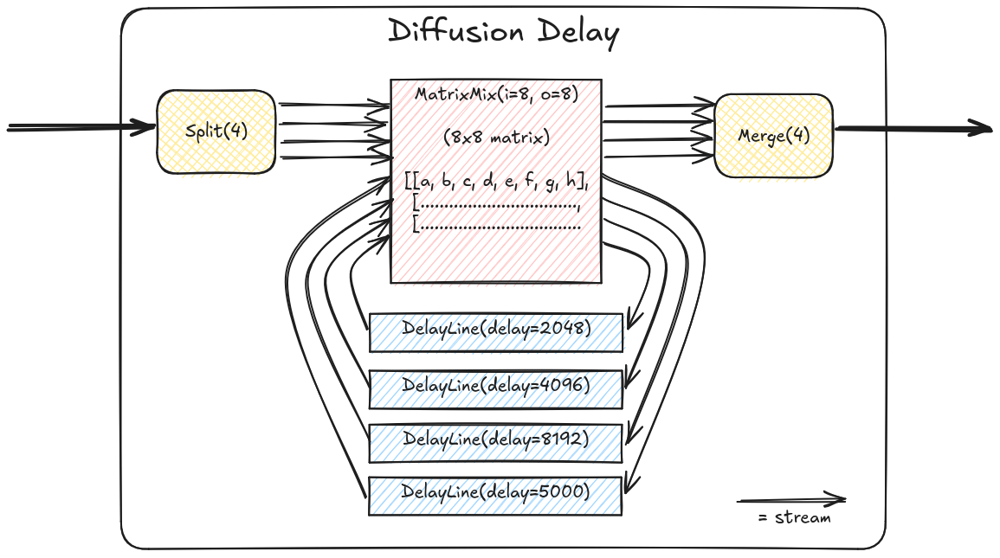

non-SoC projects
All Projects
dsp
Designs demoing parts of the DSP library. Build any of them as follows:
# from `gateware` directory. Show all available example cores -
pdm dsp -h
# build an example core
pdm dsp build --dsp-core nco
- class top.dsp.top.Mirror(*args, src_loc_at=0, **kwargs)
Route audio inputs straight to outputs (in the audio domain). This is the simplest possible core, useful for basic tests.
- class top.dsp.top.QuadNCO(*args, src_loc_at=0, **kwargs)
Audio-rate oscillator (NCO) with internal oversampling. 4 different waveform outputs.
TODO: We should really inject the cal for this one as otherwise the V/oct is not calibrated. Yet to figure out the easiest way to do so without an SoC.
in0: V/oct pitch in1: phase modulation out0: sine out1: saw out2: tri out3: square
- class top.dsp.top.Resampler(*args, src_loc_at=0, **kwargs)
Resample different channels to a different sample rate (and back). Not very musically interesting
- class top.dsp.top.ResonantFilter(*args, src_loc_at=0, **kwargs)
High-, Low-, Bandpass with cutoff & resonance control.
in0: audio in in1: cutoff (0V == off, ~5V == open) in2: resonance (0V == min, ~5V == crazy)
out0: LPF out out1: HPF out out2: BPF out
- class top.dsp.top.DualVCA(*args, src_loc_at=0, **kwargs)
Audio-rate VCA.
- class top.dsp.top.Pitch(*args, src_loc_at=0, **kwargs)
PSRAM-backed pitch shifter with CV-controlled pitch. Grain size is quite large (~250ms) to reduce fluttering.
- class top.dsp.top.Matrix(*args, src_loc_at=0, **kwargs)
Matrix mixer with fixed coefficients.
- class top.dsp.top.DualWaveshaper(*args, src_loc_at=0, **kwargs)
Soft distortion, channel 1/2 inputs, 3 is overdrive gain.
- class top.dsp.top.TouchMixTop(*args, src_loc_at=0, **kwargs)
Matrix mixer, combine touch inputs in interesting ways.
- class top.dsp.top.PSRAMPingPongDelay(*args, src_loc_at=0, **kwargs)
2-channel stereo ping-pong delay, backed by external PSRAM.
2 delay lines are instantiated in isolated slices of the external memory address space. Using external memory allows for much longer delay times whilst using less resources, compared to SRAM-backed delay lines, however on a larger design, you have to be careful that PSRAM-backed delay lines don’t get starved by other PSRAM traffic (i.e video framebuffer operations).
Tiliqua input 0/1 is stereo in, output 0/1 is stereo out.
- class top.dsp.top.SRAMPingPongDelay(*args, src_loc_at=0, **kwargs)
2-channel stereo ping-pong delay, backed by internal SRAM.
Tiliqua input 0/1 is stereo in, output 0/1 is stereo out.
- class top.dsp.top.PSRAMDiffuser(*args, src_loc_at=0, **kwargs)
PSRAM-backed 4-channel feedback delay, diffused by a matrix mixer.
A block diagram of the signal flow inside this demo:
All 4 input channels are inputs. All 4 output channels are outputs.
{kind=link}
- class top.dsp.top.SRAMDiffuser(*args, src_loc_at=0, **kwargs)
SRAM-backed 4-channel feedback delay, diffused by a matrix mixer.
- class top.dsp.top.PSRAMMultiDiffuser(*args, src_loc_at=0, **kwargs)
Kind of ridiculous 3x chained diffusers (4x4 diffuser into 4x4 diffuser into 4x4 diffuser).
All 4 input channels are inputs. All 4 output channels are outputs.
Be careful with the input amplitude on this one, it clips inside the diffuser multipliers pretty easily and can be a bit unstable.
Sounds pretty close to a REALLY long reverb. A single diffuser suffices for most real audio applications, but this one is a bit crazy :).
Its also useful for stress-testing the memory interface logic.
With 2x PSRAM-backed diffusers that’s 8x simultaneous 48kHz audio streams hitting the PSRAM (4 write streams, 4 read streams). In simulation the PSRAM controller is blocking ~15% of the time. Looking at the traces it seems the cache is bursting twice as often as it really needs to (in theory), so probably tweaking the cache architecture could get the PSRAM bandwidth consumption down considerably.
- class top.dsp.top.TripleMirror(*args, src_loc_at=0, **kwargs)
Example of using extra (external) audio boards.
Route audio inputs to outputs on 3 audio boards simultaneously: the internal one, and one on each PMOD expansion port. This core assumes all are connected, but nothing bad will happen if one is missing (as long as the unused expansion ports are left disconnected!)
- class top.dsp.top.STFTMirror(*args, src_loc_at=0, **kwargs)
Simple test of the
STFTProcessorcomponent. Take channel 0, convert blocks into frequency-domain spectra and back again, and then emit the same time-domain signal out channel 0.
- class top.dsp.top.Vocoder(*args, src_loc_at=0, **kwargs)
STFT-based spectral cross-synthesis (vocoder-like)
Channel 0 is the ‘carrier’, channel 1 is the ‘modulator’. The spectral envelope of the modulator is applied to the carrier in the frequency domain, the result of which is emitted out channel 0.
Use relatively high levels and some compression on the modulator to get decent intelligibility.
- class top.dsp.top.Noise(*args, src_loc_at=0, **kwargs)
Digital white noise, output on channel 0.
- class top.dsp.top.DWO(*args, src_loc_at=0, **kwargs)
Superimposed detuned sinusoids from a digital waveguide oscillator.
Not tunable, but an interesting experiment.
beamrace
Simple video generation cores ‘racing the beam’, where the color of every pixel is calculated right before it is sent to the screen.
Every ‘pattern core’ takes the signals in BeamRaceInputs (current pixel, current
audio samples), and emits the signals in BeamRaceOutputs (output pixel color).
Each ‘pattern core’ is wrapped by BeamRaceTop depending on which one is selected
via the CLI, for example pdm beamracer build --core=stripes will build a
BeamRaceTop that contains the Stripes pattern core. The mapping is in CORES
below.
Inside each ‘pattern core’, signals can be considered already synchronized into the ‘dvi’
domain - a DomainRenamer maps this to the sync domain in each pattern core. So,
inside the pattern cores, you can assume everything is in the sync domain, which is
at the pixel clock.
A simulation testbench sim.cpp is provided, so you can simulate new cores by using
pdm beamrace sim --core=<my_core>, which will emit bitmaps for the simulated frames.
In the simulation testbench, sine and cosine waves are sent into the ‘fake’ audio inputs.
- class top.beamrace.top.BeamRaceInputs
Inputs into a beamracing core, all in the ‘dvi’ domain (at the pixel clock).
- class top.beamrace.top.BeamRaceOutputs
Outputs from a beamracing core, all in the ‘dvi’ domain (at the pixel clock).
- class top.beamrace.top.Stripes(*args, src_loc_at=0, **kwargs)
Beamracing pattern core. Translated from ‘Stripes’ from https://vga-playground.com
- Original attribution:
Copyright (c) 2024 Uri Shaked SPDX-License-Identifier: Apache-2.0
- class top.beamrace.top.Balls(*args, src_loc_at=0, **kwargs)
Beamracing pattern core. Translated from ‘Balls’ from vga-playground.com
Edits: some added registers to make timing more FPGA friendly.
- Original attribution:
Copyright (c) 2024 Renaldas Zioma based on the VGA examples by Uri Shaked SPDX-License-Identifier: Apache-2.0
- class top.beamrace.top.Checkers(*args, src_loc_at=0, **kwargs)
Beamracing pattern core. Translated from ‘Checkers’ from vga-playground.com
Edits: 1 layer removed, some added registers for friendlier timing.
- Original attribution:
Copyright (c) 2024 Renaldas Zioma based on the VGA examples by Uri Shaked SPDX-License-Identifier: Apache-2.0
- class top.beamrace.top.BeamRaceTop(*args, src_loc_at=0, **kwargs)
Wrapper structure around beamracing cores.
Provides the clock, DVI timing generation and PHY, and interface to the audio IOs (synchronized to the video domain), as well as ‘hold to enter bootloader’ logic.
usb_audio
4-channel USB2 audio interface, based on LUNA project. Enumerates as a 4-in, 4-out 48kHz sound card.
usb_host
Gateware-only USB MIDI host to CV converter.
*WARN* because there is no SoC to do USB CC negotiation, this demo hardwires the VBUS output to ON !!!
At the moment, all the MIDI traffic is routed to CV outputs according
to the existing example (see docstring) in tiliqua.midi:MonoMidiCV.
vectorscope_no_soc
CRT / Vectorscope simulator. Rasterizes X/Y (audio channel 0, 1) and color (audio channel 3) to a simulated CRT display, with intensity gradient and afterglow effects.
Simple gateware-only version, this is mostly useful for debugging the memory and video subsystems with an ILA or simulation, as it’s smaller.
Passing the --spectrogram passes frequency and magnitude information
to the plotter (from channel 0) instead of just passing through X and Y.
See ‘xbeam’ for SoC version of the scope with a menu system.
# for visualizing the color palette
$ pdm colors_vectorscope
- class top.vectorscope_no_soc.top.VectorScopeTop(*args, src_loc_at=0, **kwargs)
Top-level Vectorscope design.
- top.vectorscope_no_soc.top.colors()
Render image of intensity/color palette used internally by DMAFramebuffer. This is useful for quickly tweaking it.